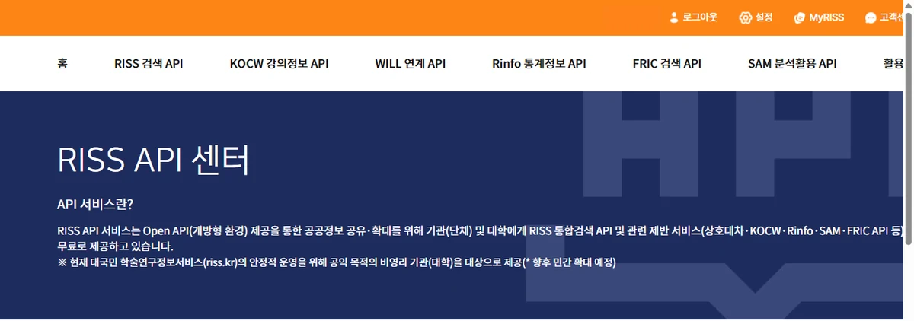
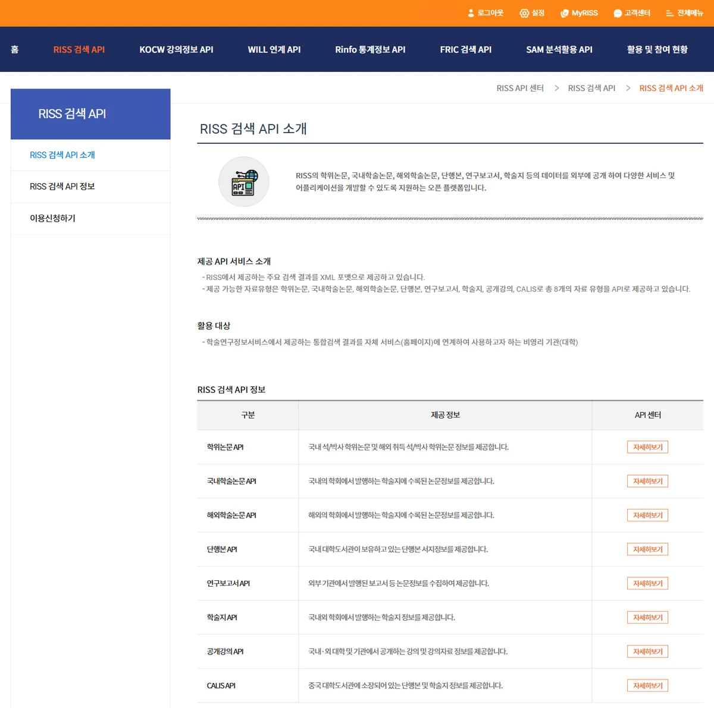
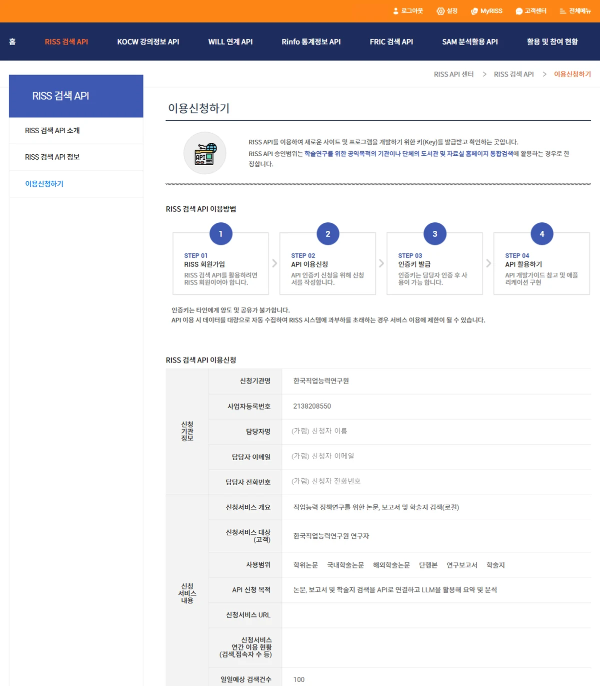
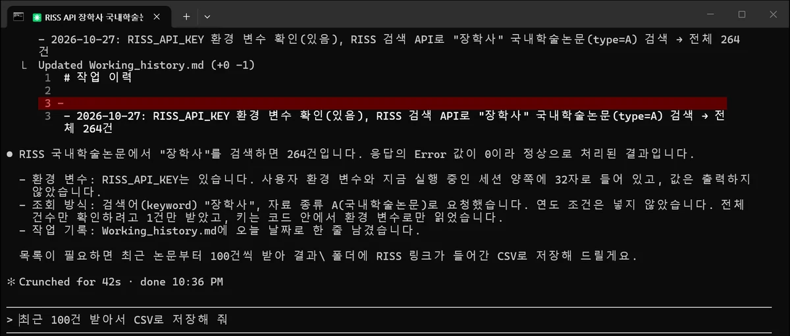
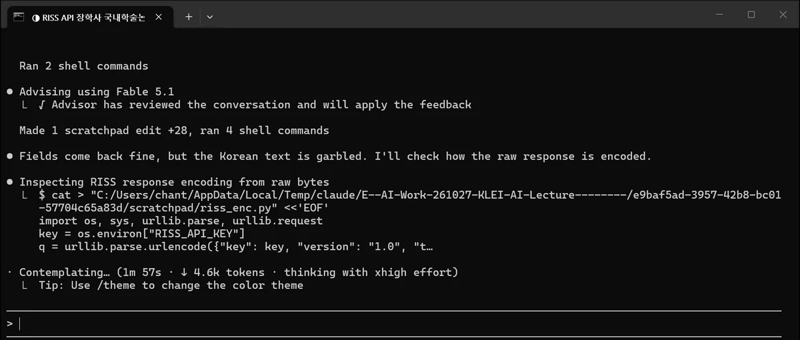
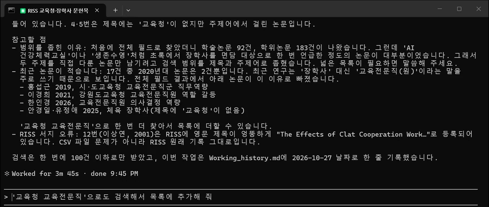
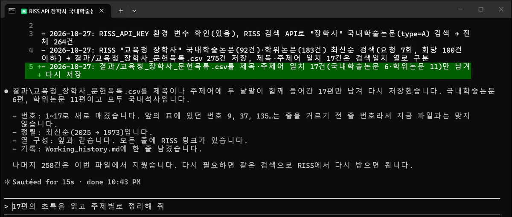

따라 하기 ②
RISS 문헌 검색을
클로드 코드에게 맡기기
RISS 검색 API 키를 받아 안전하게 보관하고, 클로드 코드에게 '교육청'과 '장학사'를 다룬 문헌을 찾아 목록을 CSV 파일로 만들어 달라고 부탁합니다. 프로그램을 따로 설치하지 않고 말로 부탁합니다.
1무엇을 받아올 수 있나
RISS 검색 API는 RISS 통합검색 결과를 프로그램으로 받아 오는 창구입니다. 발표자가 받은 키로 확인해 보니 자료 종류 여섯 가지를 검색할 수 있었습니다. 건수는 '직업교육'으로 검색했을 때의 결과입니다(해외학술논문은 'vocational education').
| 자료 종류 | type 값 | 검색 건수 | 받아오는 항목 (공통 항목 외) |
|---|---|---|---|
| 국내학술논문 | A | 16,474 | 학술지명, 권·호, KCI 등재 여부, 원문 무료·유료 |
| 학위논문 | T | 28,399 | 학위 구분(국내석사·국내박사 등) |
| 해외학술논문 | O | 39,116 | |
| 단행본 | U | 25,936 | 소장 정보 |
| 연구보고서 | F | 3,129 | |
| 학술지 | S | 20 | ISSN, 등재 여부 |
공통 항목은 제목, 저자, 발행처, 발행연도, 상세 페이지 링크, 그리고 초록·목차·원문이 있는지(Y/N)입니다. 결과는 아래 같은 XML 형식으로 오고, 한 번에 최대 100건씩 받습니다. totalcount가 전체 건수이고 metadata 하나가 논문 한 편입니다(실제 응답에서 한 건만 줄여 옮김).
<head> <totalcount>16474</totalcount> <Error>0</Error> </head> <metadata> <riss.title>수요자 중심 직업교육연수가 특수교사의 연수만족도와 직업교육효능감에 미치는 효과</riss.title> <riss.author>이정은, 강영심, 정현지</riss.author> <riss.pubdate>2014</riss.pubdate> <riss.stitle>특수교육재활과학연구</riss.stitle> <riss.reg>KCI등재</riss.reg> <url>http://www.riss.kr/link?id=A106205814</url> </metadata>
API가 주는 것은 서지 정보와 링크까지입니다. 초록과 원문은 링크를 눌러 RISS에서 봅니다. 공개강의와 CALIS 자료는 발표자 키로는 '인증 오류'가 나서, 승인 범위에 따로 넣어야 하는 것으로 보입니다.
2신청 자격 확인

- 기관 명의로 신청합니다. 신청서에 소속 기관 이름과 사업자등록번호를 적습니다. 발표자는 한국직업능력연구원 명의로 신청해 승인받았습니다.
- 키는 사람마다 따로 받습니다. 신청 화면에 "인증키는 타인에게 양도 및 공유가 불가합니다"라고 적혀 있습니다. 동료의 키를 빌려 쓰지 않고 각자 신청합니다.
- 대량 자동 수집은 금지입니다. 같은 화면에 "데이터를 대량으로 자동 수집하여 RISS 시스템에 과부하를 초래하는 경우 서비스 이용에 제한"이 있을 수 있다고 적혀 있습니다.
3이용 신청서 쓰기
- RISS(riss.kr)에 로그인합니다. 회원이 아니면 먼저 가입합니다.
- API 센터에서 위쪽 RISS 검색 API를 누르고, 왼쪽 메뉴의 이용신청하기로 들어갑니다.


신청서 항목은 발표자가 쓴 내용을 예로 들면 이렇습니다.
| 항목 | 발표자가 쓴 내용 | 메모 |
|---|---|---|
| 신청기관명, 사업자등록번호 | 한국직업능력연구원, 기관 사업자등록번호 | 소속 기관 것을 적습니다 |
| 담당자명·이메일·전화번호 | 신청자 본인 | 키는 신청자에게 발급됩니다 |
| 신청서비스 개요 | 직업능력 정책연구를 위한 논문, 보고서 및 학술지 검색(로컬) | '로컬'은 내 PC에서 쓴다는 뜻 |
| 신청서비스 대상(고객) | 한국직업능력연구원 연구자 | |
| 사용범위 | 학위논문, 국내학술논문, 해외학술논문, 단행본, 연구보고서, 학술지 | 필요한 자료 종류를 고릅니다 |
| API 신청 목적 | 논문, 보고서 및 학술지 검색을 API로 연결하고 LLM을 활용해 요약 및 분석 | |
| 신청서비스 URL, 연간 이용 현황 | (비워 둠) | 홈페이지가 없어 비워 두고 냈습니다 |
| 일일예상 검색건수 | 100 |
심사를 거쳐 승인되면 인증키(영문 소문자와 숫자 32자리)를 받습니다. 이 키가 다음 단계부터 쓰는 열쇠입니다.
4키 보안: 왜 조심해야 하나
인증키는 RISS가 나에게 내준 열쇠입니다. 키가 새어 나가 다른 사람이 쓰면 그 기록은 내 키로 남고, 그 사람이 대량으로 받아 가면 내 키의 이용이 제한될 수 있습니다. 남에게 넘길 수 없다는 조건도 있으니, 처음부터 새어 나갈 길을 막아 둡니다.
하지 말 것
- 채팅창에 키를 붙여 넣지 않습니다. 클로드 웹, 챗GPT, 클로드 코드의 대화창 모두 마찬가지입니다. 붙여 넣은 글은 대화 기록에 남습니다.
- 작업 폴더에 키를 적은 파일을 두지 않습니다. 폴더를 압축해 보내거나 깃허브에 올리면 키가 같이 갑니다. 클로드 코드도 폴더 안 파일은 읽을 수 있습니다.
- 메일 전달, 단체 대화방, 공유 문서에 적지 않습니다.
- 키가 보이는 화면을 캡처하거나 화면 공유하지 않습니다. 브라우저 주소창에 키를 넣어 시험하면 방문 기록에도 남으니 하지 않습니다.
대신 이렇게: 환경 변수
환경 변수는 내 Windows 계정에 이름을 붙여 저장해 두는 값입니다. 키를 RISS_API_KEY라는 이름으로 넣어 두면, 클로드 코드가 만든 프로그램은 값을 몰라도 이 이름으로 꺼내 씁니다. 작업 폴더 밖에 있으니 폴더를 보내도 따라가지 않고, 클로드 코드에게도 값 대신 이름만 알려 주면 됩니다.
환경 변수도 내 PC 안에 그대로 저장된다는 점은 같습니다. PC 계정을 남과 같이 쓰지 않고, 키가 새어 나간 것 같으면 RISS 고객센터(1599-3122)에 알립니다.
5키를 환경 변수로 등록
받은 키를 복사해 둡니다. 키를 다른 기기에서 받았다면 메모장에 잠깐 붙여 저장해 옮겨도 됩니다. 이 메모 파일은 등록이 끝나면 지웁니다.
- 시작 버튼을 누르고
환경 변수를 입력한 뒤, 계정의 환경 변수 편집을 클릭합니다. - 위쪽 '사용자 변수' 칸 아래의 새로 만들기를 누릅니다.
- 변수 이름에
RISS_API_KEY를 입력합니다(대문자, 밑줄 그대로). - 변수 값에 키를 붙여 넣습니다. 앞뒤에 빈칸이 들어가지 않게 합니다.
- 확인을 누르고, 처음 창도 확인을 눌러 닫습니다.
RISS_API_KEY
등록 전에 열어 둔 명령 프롬프트와 클로드 코드는 새 환경 변수를 모릅니다. 모두 닫고 새로 엽니다.
부탁하려면 키를 대화창에 붙여 넣어야 합니다. 4단계의 '하지 말 것' 1번에 걸리니, 이 단계만은 직접 합니다.
6문헌조사 폴더와 CLAUDE.md
실습\문헌조사\ 폴더와 그 안에 결과\ 폴더를 만들고, CLAUDE.md를 둡니다. 만드는 방법은 따라 하기 ①의 4단계와 같습니다. 아래 내용을 그대로 붙여 넣으면 됩니다. 키 값은 어디에도 적지 않습니다.
# 문헌 조사 ## RISS 검색 API - 키는 환경 변수 `RISS_API_KEY`에 있다. 키 값을 화면에 출력하거나, 파일·코드·로그에 쓰지 않는다(코드에서는 환경 변수로만 읽는다). - 요청 주소: `https://www.riss.kr/openApi?key=<키>&version=1.0&type=<자료 종류>&keyword=<검색어>&rowcount=<건수>` - 자료 종류(type): A 국내학술논문, T 학위논문, O 해외학술논문, U 단행본, F 연구보고서, S 학술지 - keyword 대신 title(제목), author(저자), subject(주제어)로 좁혀 찾을 수 있다. 검색어는 UTF-8로 인코딩한다. - rowcount는 최대 100, rsnum은 시작 번호(1부터). 정렬은 sort=Y&asc=D(최신순). - 연도로 거를 때는 spubdate와 epubdate를 둘 다 준다(하나만 주면 0건). - 응답은 XML: head의 totalcount(전체 건수), Error(0이면 정상, 004는 인증 오류), metadata마다 riss.title, riss.author, riss.publisher, riss.pubdate, riss.stitle(학술지), riss.reg(등재), riss.mtype(학위 구분), url(상세 링크). - 자세한 설명: https://www.riss.kr/apicenter/apiSearchDissKor.do ## 작업 규칙 - 결과 목록은 `결과\`에 CSV(`utf-8-sig`)로 저장하고, 각 줄에 RISS 링크를 남긴다. - 한꺼번에 많이 받지 않는다(한 번에 100건 이하, RISS 대량 자동 수집 금지). - 한 일은 `Working_history.md`에 날짜와 함께 한 줄로 기록한다.
- 키 규칙: 클로드 코드는 키 이름만 알고, 값은 화면이나 파일에 남기지 않게 합니다.
- API 요약: RISS 안내 페이지의 요청 방식을 줄여 적었습니다. '연도는 둘 다 준다'는 발표자가 직접 써 보다가 알게 된 점입니다. 이걸 적어 두면 클로드 코드가 처음부터 맞게 부릅니다.
- 대량 수집 금지: RISS 이용 조건을 적어 두면 작업할 때마다 지킵니다.
7키가 되는지 확인
문헌조사 폴더에서 터미널을 새로 열고(준비 C) claude를 실행한 뒤, 먼저 키가 잘 들어갔는지만 확인합니다.
RISS_API_KEY 환경 변수가 있는지 값은 보여 주지 말고 확인하고, RISS 검색 API로 "장학사"를 국내학술논문에서 검색하면 몇 건인지 알려 줘

- '환경 변수가 없다'고 하면: 5단계 등록 뒤에 터미널과 클로드 코드를 새로 열었는지 봅니다.
- '인증 오류'(004)가 나오면: 키를 붙여 넣을 때 빈칸이나 글자가 빠졌는지, 고른 자료 종류가 내 키의 승인 범위에 들어 있는지 봅니다.
8검색해서 목록 CSV 만들기
같은 창에서 이어서 부탁합니다.
RISS에서 "교육청"과 "장학사"를 다룬 국내학술논문과 학위논문을 찾아 최신순 목록을 표로 보여 주고, 결과\교육청_장학사_문헌목록.csv로 저장해 줘


275건은 너무 많으니 결과를 보고 범위를 좁혀 달라고 합니다.
제목이나 주제어에 두 낱말이 함께 나오는 17편만 남겨서 결과\교육청_장학사_문헌목록.csv를 다시 저장해 줘

저장된 결과\교육청_장학사_문헌목록.csv를 엑셀로 열면 번호, 유형, 발행연도, 제목, 저자, 발행처, 학술지, 권, 호, 등재, 학위구분, 원문있음, 원문요금, 검색일치, 링크 열이 보입니다. 주요 열만 옮기면 아래와 같습니다.
| 번호 | 유형 | 연도 | 제목 (앞부분) | 저자 | 학술지·수여기관 | 등재·학위 |
|---|---|---|---|---|---|---|
| 1 | 국내학술논문 | 2025 | 과학영재 특례자 제도 실행의 장애 요인과 정책 개선 방향: 시도교육청 장학사 관점을 중심으로 | 유민희; 류춘열 | 영재와 영재교육 | KCI등재 |
| 2 | 국내학술논문 | 2022 | 한 도교육청 장학사의 경험에 관한 자전적 내러티브: 넘침과 모자람의 균형을 찾아서 | 오영범 | 내러티브와 교육연구 | KCI등재 |
| 3 | 국내학술논문 | 2011 | 지역교육청 유아 담당 장학사의 문화에 대한 질적 연구 | 서현; 이승은 | 한국유아교육학회 학술대회자료집 | |
| 4 | 국내학술논문 | 2010 | 초임 체육장학사 문화에 대한 사례연구 | 최흥섭; 박순이 | 학습자중심교과교육연구 | KCI등재 |
| 5 | 국내학술논문 | 2009 | 유아 담당 장학사의 어려움과 보람, 그리고 희망 | 이대균 외 2명 | 유아교육학논집 | KCI등재 |
| 6 | 학위논문 | 2009 | 교원 및 장학사의 인식으로 본 장학의 개념 연구: 충청북도교육청 장학을 중심으로 | 백우정 | 한국교원대학교 정책대학원 | 국내석사 |
| 7 | 학위논문 | 2009 | 울산광역시 교육청 장학사의 업무부담에 관한 문화기술적 사례연구 | 김상호 | 울산대학교 | 국내석사 |
| 8 | 학위논문 | 2009 | 장학사의 직무 인식과 역할 재정립: 강원도교육청 소속 장학사를 중심으로 | 김영자 | 한국교원대학교 정책대학원 | 국내석사 |
| 9 | 국내학술논문 | 2008 | 지역교육청의 장학사 문화에 관한 질적 사례 연구 | 장원규 | 교육학연구 | KCI등재 |
| 10 | 학위논문 | 2003 | 지역교육청 장학사의 직무분석 | 구교열 | 서울교육대학교 교육대학원 | 국내석사 |
| 11 | 학위논문 | 2003 | 지역교육청 중등장학사의 직무수행에 관한 질적 연구 | 표관식 | 고려대학교 행정대학원 | 국내석사 |
| ... | 12~17번은 2001~1973년 학위논문 6편(한자 제목 포함) | |||||
이어서 해 볼 만한 부탁
최근 연구는 '장학사' 대신 '교육전문직(원)'이라는 말을 쓰기도 합니다. 275건 목록에도 '교육전문직원의 의사결정 역량 발현 과정에 관한 근거이론적 연구'(2026) 같은 논문이 있었습니다.
'교육청 교육전문직'으로도 검색해서 목록에 추가해 줘
목록을 연대별로 나눠서 연구 주제가 어떻게 바뀌었는지 정리해 줘
초록 본문은 API로 오지 않으므로, 요약을 부탁하면 클로드 코드는 제목과 서지 정보만 보고 정리합니다. 깊이 읽을 논문은 링크로 원문을 확인합니다.
9코덱스와 웹에서는
코덱스(ChatGPT)
방식은 같습니다. 5단계의 환경 변수는 그대로 쓰고, 6단계의 CLAUDE.md를 복사해 이름을 AGENTS.md로 바꿔 둡니다. 그다음 문헌조사 폴더에서 codex를 실행해 7·8단계와 같은 부탁을 합니다. 코덱스는 인터넷에 접속하는 명령을 실행하기 전에 허락을 물을 수 있으니, 무엇을 하려는지 읽어 보고 허락합니다. (발표자 PC에서는 코덱스 실행 화면을 찍지 못했습니다.)
클로드 웹, 챗GPT 웹
브라우저에서 쓰는 클로드(claude.ai)와 챗GPT는 내 PC의 환경 변수를 볼 수 없습니다. 키를 대화창에 붙여 넣는 방법은 4단계에서 말한 대로 하지 않습니다. 대신 검색은 내 PC의 클로드 코드로 하고, 8단계에서 만든 CSV 파일을 웹 채팅에 올려 분류하거나 정리해 달라고 부탁합니다. CSV에는 키가 들어 있지 않습니다.
① 키는 나만 쓰고, 환경 변수에만 둡니다. ② 한 번에 100건 이하로, 필요한 만큼만 받습니다(대량 자동 수집 금지). ③ RISS 검색 결과는 BY-NC-ND 조건이라, 출처(RISS, KERIS)를 밝히고 영리 목적이나 2차 저작물로 쓰지 않습니다.